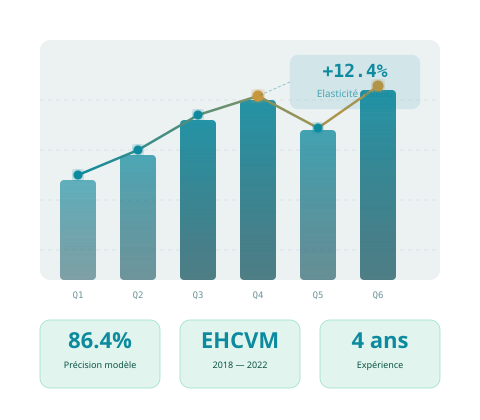

Économiste quantitatif · Data Scientist
Ingénieur diplômé ENSAI (Rennes) & ENSAE (Dakar), spécialisé en modélisation économique, évaluation de politiques publiques et économétrie appliquée. Co-auteur d'un working paper sur la consommation des ménages et la pauvreté au Sénégal, en collaboration avec l'Ohio State University. 4 ans d'expérience entre la recherche académique et le conseil institutionnel.

Au sein de Little John, insurtech dédiée à l'automatisation documentaire pour les courtiers d'assurance indépendants, j'applique des méthodes statistiques rigoureuses pour valider et améliorer les modèles de classification documentaire utilisés en production.
Stage au Centre de Recherche en Économie et Statistique de l'ENSAI. Projet centré sur l'analyse de l'évolution de l'offre de compétences des développeurs informatiques à partir des enquêtes annuelles Stack Overflow (2017–2023).
Collaboration académique avec le Prof. Abdoul Sam (Ohio State University) et le Dr. Fofana (ENSAE Dakar). Objectif : estimer les comportements de consommation des ménages sénégalais et éclairer les débats sur les politiques fiscales, les subventions alimentaires et la redistribution.
Au sein de l'Agence Nationale de la Statistique et de la Démographie du Sénégal, principal producteur de statistiques officielles du pays, j'ai travaillé sur la production et l'exploitation de données administratives et statistiques à grande échelle.
Cabinet de conseil en statistiques appliquées, pour des clients institutionnels et internationaux au Sénégal (ONG, bailleurs de fonds, institutions publiques).
Évaluation de l'impact de réformes fiscales, de subventions alimentaires ou de transferts sociaux sur les ménages. Identification des gagnants et perdants d'une réforme.
Analyse distributive des revenus et de la consommation. Décomposition de la pauvreté par groupes. Effets de bien-être des chocs de prix alimentaires sur les ménages vulnérables.
Modélisation de la demande de soins, évaluation économique des interventions de santé publique, analyse des déterminants de l'accès aux soins dans les pays en développement.
Analyse des déterminants salariaux, de l'offre et la demande de compétences, des inégalités de revenus, et de l'impact des politiques d'emploi sur les transitions professionnelles.
Modélisation statistique appliquée au secteur financier et assurantiel : classification de risque, scoring, analyse de portefeuilles, validation de modèles de classification documentaire.
Production d'indicateurs statistiques officiels, exploitation de bases administratives, automatisation de traitements statistiques récurrents pour les institutions nationales et internationales.
Spécialisation en modélisation économique & santé. Cette formation m'a permis d'acquérir une maîtrise avancée des méthodes d'évaluation des programmes et politiques publiques (diff-en-diff, variables instrumentales, regression discontinuity), de l'économétrie des données de panel, des modèles à choix discrets, et de l'économie de la santé. J'y ai également renforcé mes compétences en machine learning appliqué (NLP, classification, évaluation de modèles) et appris à combiner rigueur économétrique et outils data science modernes.
Formation d'ingénieur statisticien économiste de référence en Afrique de l'Ouest. J'y ai développé une solide base en statistique inférentielle, en économétrie appliquée (régressions linéaires et non linéaires, modèles ARIMA, données de panel) et en analyse des politiques économiques. Cette formation m'a également initié au machine learning et au big data, et m'a donné les outils pour analyser les données macroéconomiques et les enquêtes auprès des ménages.
Première formation universitaire en statistique et finance, qui m'a apporté les fondements en probabilités, statistique descriptive et inférentielle, analyse financière et comptabilité nationale. Cette licence m'a permis de construire une pensée rigoureuse autour de la donnée et de la mesure économique.
Disponible pour des missions en économétrie, évaluation de politiques publiques, data science économique ou recherche appliquée.